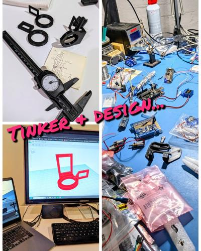
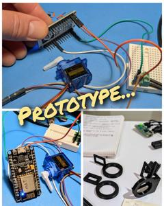
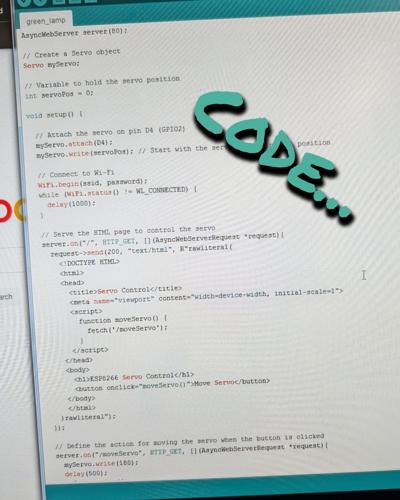
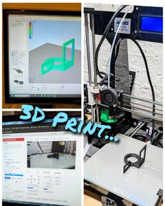
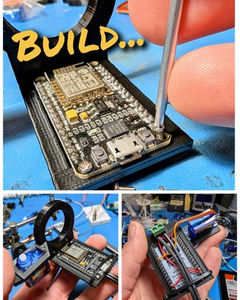
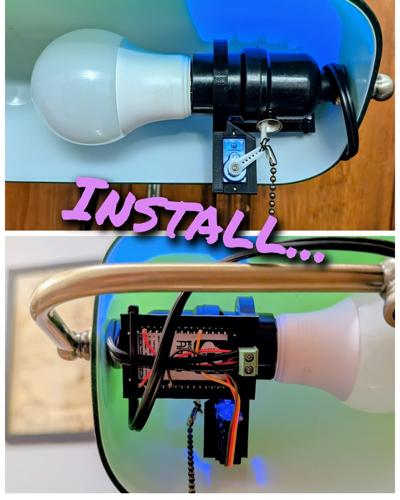

Remote Lamp Switch
Projects that involve multiple hardware and software layers and sublayers are like catnip to me. And I love interacting with the physical world using electromechanical surrogates. So, this project developed very organically and easily.
I was looking for an excuse to use one of my new favorite devices, a NodeMCU. It's basically a mini arduino with built-in WiFi (ESP8266)! How awesome - and practical - is that?! So, it was going to connect to the internet for sure, and these micro servos (Sg90s) are a perfect way to interact with the world. I also needed an excuse to design something with my new 3D printer (Bambu Lab A1), so this project was also going to involve something 3D printed.
I had an idea...
Remote controlled IoT devices are neat, but I never could justify their cost for what "benefits" they claimed to provide around the house. Also, I could just make one. Bam! A perfect application that integrated all the capabilities of these devices AND satisfied my desire for multi-layered projects utilizing hardware, software, a web interface, 3D design and printing, and a practical application:
A remote controlled light switch.
Revolutionary, I know. But it's the journey, friends. Not the destination. ;)
The NodeMCU has a web server hosting a simple html website that "listens" for a button press. When the button is pressed, the servo moves. Simple! But I designed a mount that holds the NodeMCU and servo neatly inside my favorite green desk lamp, and since the servo is physically attached to to the lamp pull chain, the lamp turns on or off remotely with the touch of a button on any internet-connected device (i.e. my phone).
Necessary? Absolutely not.
Fun? Absolutely!





2024-10-26